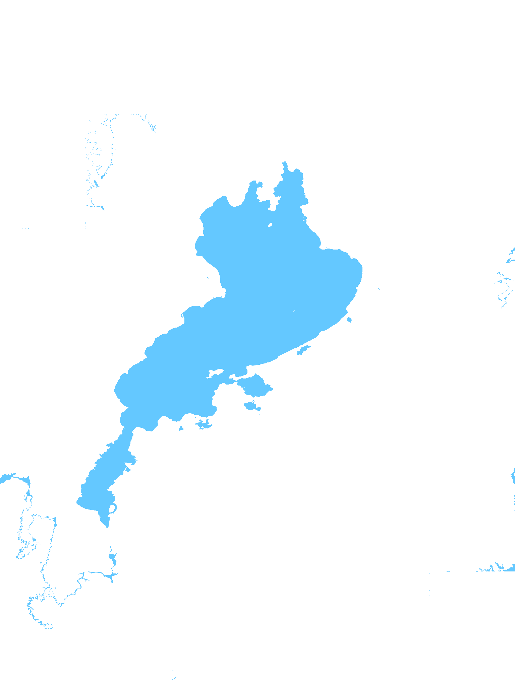

プロジェクトについて
再生可能エネルギーの不安定さを補い、災害時のバックアップにもなる―― 「びわ湖電池」は、琵琶湖の水位をたった3cm変えるだけで、 最大16GWhのエネルギーを蓄えることができる自然型揚水蓄電構想です。
本プロジェクトは、唯一無二で最大の資源「びわ湖」を“下池”に、近くの高台を“上池”とすることで、 CO₂を出さずに再エネを夜間へスライドし、日本のエネルギー自立と災害耐性を向上させることを目指します。
上池設計コンテスト
「びわ湖の水を3cmだけ、お借りします。」をテーマに、 上池を自由に設計し地形や地域性を活かした提案を募集しています。
市民・学生・技術者問わず、すべての人が対象です。 詳細はコンテスト案内をご覧ください。
詳細を見る → コンテスト → もし、大停電が来たら →びわ湖3cmシミュレータ
「びわ湖3cmシミュレータ」は地図をクリックすると、標高差と発電量、琵琶湖水位差、最短水際までの距離が表示されます だれでも簡単な操作で、簡単な操作で上池の位置をいろいろな場所に試していただけますので 本プロジェクトの設計にご活用ください。
CO₂を出さずに再エネを夜間へスライドし、日本のエネルギー自立と災害耐性を向上させるためみんなで考えましょう。
💧 地図で試す → びわ湖3cmシミュレータ